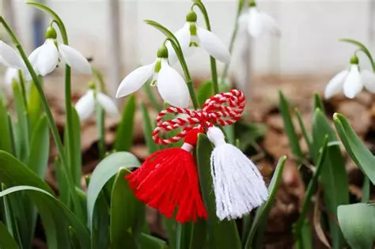

01/03/2025
I had such a good day today!!! I went out in the city with a friend of mine, we went out and got ramen, went to the asiatown and got some groceries. Then, we went to her place and hung around, made some boba and she decorated my laptop with stickers!! I'll put a photo of that below.
But before all of that some other things happened! First of all, it's the first of march and us Romanians celebrate the coming of spring by giving eachother red and white bracelet, the story around it is quite cute so I'll quickly tell it.
'On the first day of spring, the warm Spring went for a walk by the side of a forest and noticed that there was a small snowdrop growing from the snow, beneath a dead, thorny bush. She decided to help it grow, so she started moving the snow off of it and moving the thorny branches away. Seeing this, the Winter became infuriated and called over the Wind and Frost to kill the flower. The snowdrop immediately froze. The Spring quickly put her warm hands over the flower, to warm it up, but she caught it on one of the thorns. So, from her fingers fell a drop of warm blood, which falling over the flower, made it warm up and come back to life. In this way, Spring beat Winter. So, we gift eachother red and white bracelets to symbolize the blood of the spring protecting the life of the snowdrop.'
this is what it looks like (martisor) ^
I'm wearing this old bracelet that my an old ex-girlfriend (now friend) made for me, she was very happy to see that :) I unfortunately don't have any Romanian friends or family around, so I couldn't gift anyone any bracelets :(
Oh also, before I met my friend I went to this bookshop and I bought this poetry anthology. But when I went to the cash desk and handed the book to the clerk he looked at it and said 'oh, thats my book!'. Turns out it was written by him, how cool is that! He gave my some advice on getting my poems published, but idk if they're good enough to be published, I mean I only have like 1 or 2 im proud of at all.
I also played a cute board game with some random people I sat down next to at a cafe, that was really sweet <3
All in all, 10/10 start to spring :D
No music today sorry... ♡